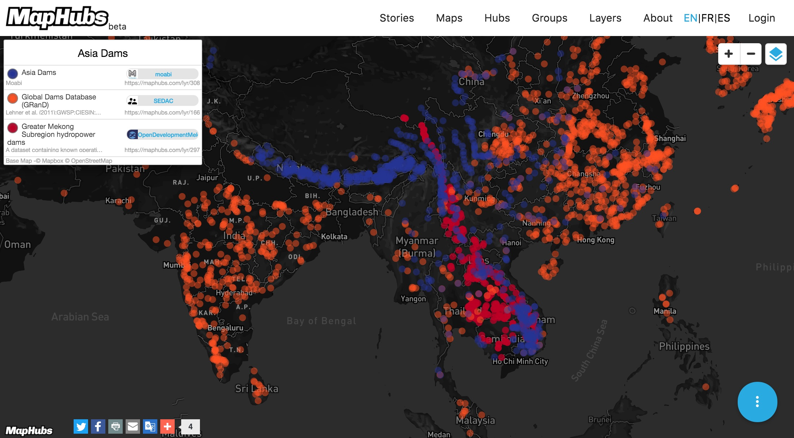

Kristofor Carle
Lead Developer - MapHubs
State of the Map US - Seattle, WA
July 24, 2016
kris@maphubs.com
MapHubs is a home for the world's open map data and an easy tool for making and sharing maps
MapHubs is 100% open-source https://gihub.com/maphubs/maphubs
We covered: